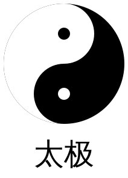

8.5
Yijing Icons
Chinese Yijing Icons/易经图标.
Example:
> (taijibagua)
1 Prameters
parameter
(current-yijing-size) → (and/c real? (not/c negative?))
(current-yijing-size v) → void? v : (and/c real? (not/c negative?))
= 60
Set generated icons’s default size.
parameter
(current-yijing-chinese-charaters) → boolean?
(current-yijing-chinese-charaters v) → void? v : boolean?
= #t
Set generated icons to whether include chinese charaters or not.
2 Generating icons
2.1 Taijibagua/太极八卦图
procedure
(taijibagua) → image?
Constructs Taijibagua/太极八卦图.
2.2 Taiji/太极
Constructs taiji(太极).
Example:
> (taiji 50) 
2.3 Liangyi/两仪
Constructs Yin/阴, Yang/阳.
2.4 Sixiang/四象
procedure
procedure
procedure
procedure
Constructs Taiyang/太阳, Shaoyin/少阴, Shaoyang/少阳, Taiyin/太阴.
2.5 Bagua/八卦
procedure
procedure
procedure
procedure
procedure
procedure
procedure
procedure
Constructs Qian/乾(天), Dui/兑(泽), Li/离(火), Zhen/震(雷), Xun/巽(风), Kan/坎(水), Gen/艮(山), Kun/坤(地).
乾三连（☰），坤六断（☷）；
震仰盂（☳），艮覆碗（☶）；
离中虚（☲），坎中满（☵）；
兑上缺（☱），巽下断（☴）。
乾三连（☰），坤六断（☷）；
震仰盂（☳），艮覆碗（☶）；
离中虚（☲），坎中满（☵）；
兑上缺（☱），巽下断（☴）。